Hi, I'm Boris
Software Developer • Builder • Problem Solver
About Me
I'm a software developer studing in Media Creatinon semester that practices mostly Busness because I'm the scrum master of the team PatchWork. I also stduy infracstructure for fun. I even have a server in my room where I host a cloud and gitlab runners inside docker containers. I'm basically doing everything. My main goal is to be a 10x developer so it's expected of me to put more effort into studing everything ICT related.
Poster
As a team we had to make a poster and to do so each and
everyone of use had to make their own poster
The one I made was in gimp.
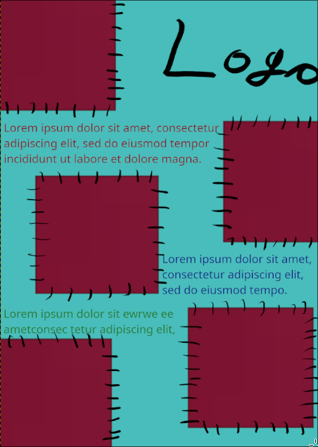
Patchwork Website Wireframe
We the Patchwork team decided to make a webpage in order to
display our team a bit better.
To do so we used the diamond method where me, Dylan and
Constantin made a prototype of a webpage in figma. My one is
bellow.
Link to Figma
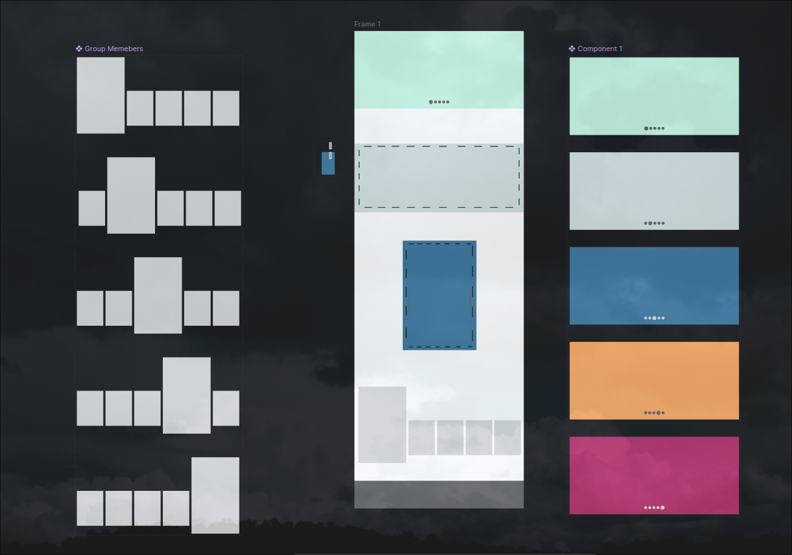
Concept to Sketch
Results of Concept & Inspiration workshop. I had to make a
moodboard and a sketch that represents words I had tp think
of.
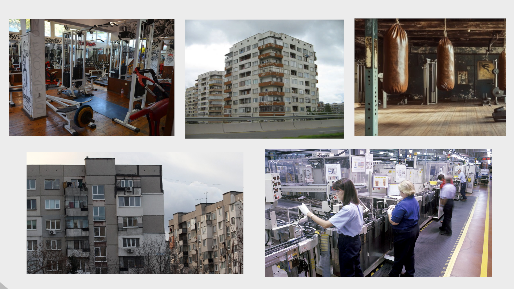

Control Panel GUI Prototype
Desca asked for a control panel where she will be able to
control Calsifer in all ways she would desire. The control
panel is not mandatory for Calsifer's function. She can just
leave it be for the chat to play with him as much as possible.
In order to make a satisfing prototype me, Dylan and
Constantin desided to use diamond method where each one does a
mid fidelity version of the prototype and then merge based on
what Desca likes.
Here is the part of the final prototype that was inspired by
my prototype after merging.
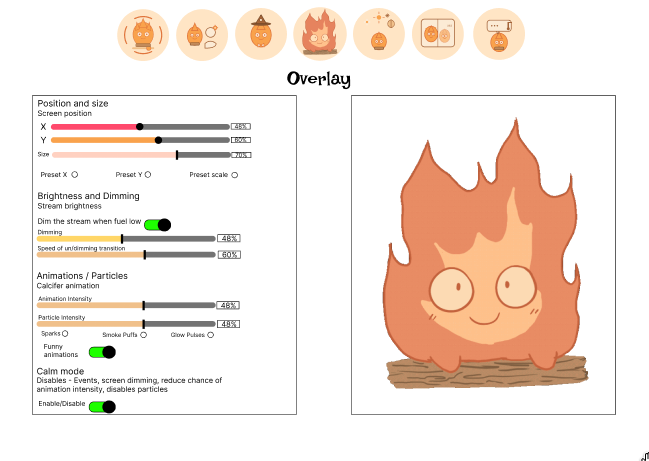
Here is a link to the figma we worked on.Tamagotchi Game
I coded a starting version of the Tamagotchi Game.
The main components are overlay, gui, server. It works by
having the overlay and gui comunicate to each other with the
server. The gui sends commands to the server and the server
changes the overlay based on the request from the gui. The
server can also recieve direct commands vie the terminal to
trigger animation changes.
The overlay has overlay.html that is Calsifer itself that is
in the overlay section in obs and overlay.js that does't the
logic behind the overlay (decrese the hunger, mood and helth
points).
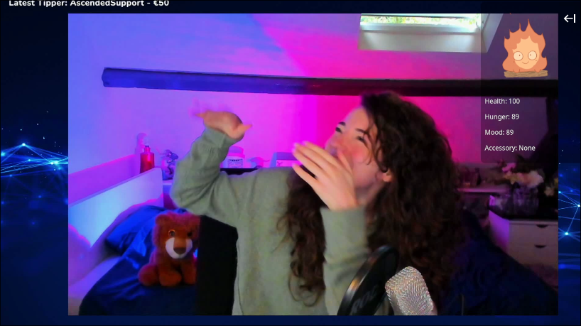
Patchwork GitLab Repository
GitLab repository for Patchwork with a strict branch strategy.
It's that no one can push any code in the main branch. This is
done so there is always one stable version of the project and
one unstable version where all development happens.
Different features are developed in different branches that
merge into the side (unstable) branch and after validating
that everything works and is stable enough is merged to the
main (stable) branch.
This way there will always be a backup in case someone messes
the repo by mistake.
Link for repository
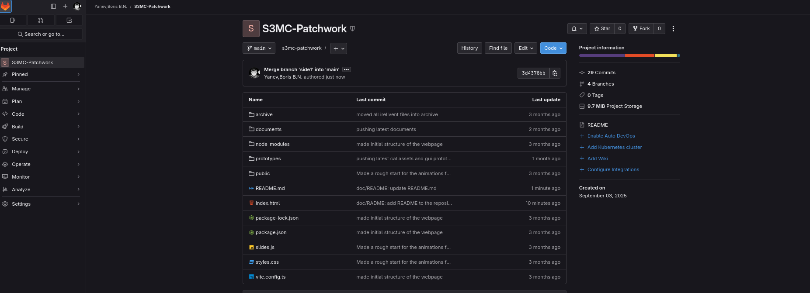
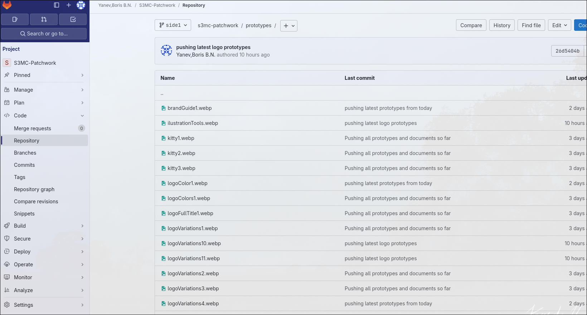
Twitch Game Manual
In one of my tasks I made a very basic twitch integrated game. In order to implement it to your stream you have to do a bunch of tasks. Because of that I made a simple text file with instructions on how to implement the game
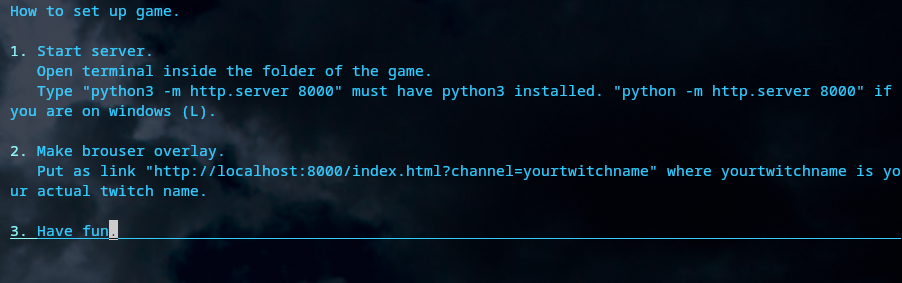
Tamagotchi Game repository
For the game I made gitlab repository where I added Dylan and
Constantin to work on the game.
It uses the same branching strategy as the Patchwork
repository.
Link for repository
I am the only one pushing in the repo at the time of the
screenshot because the rest are still busy with merging the
Control Panel GUI prototypes.
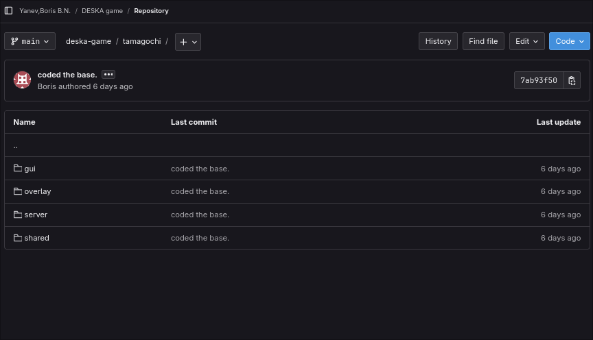
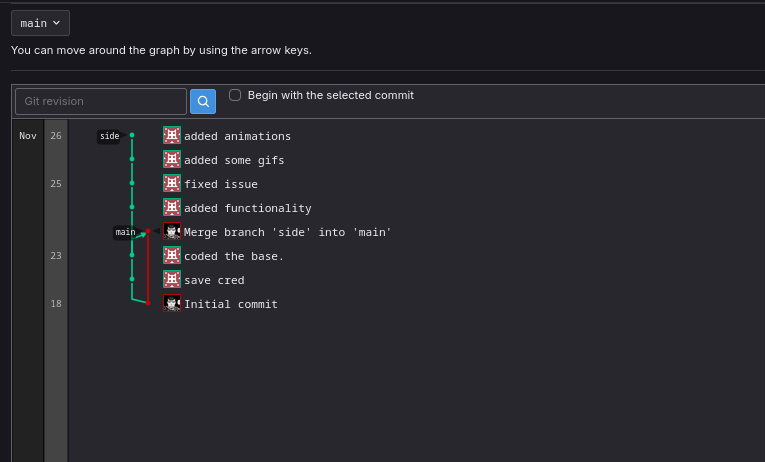
Portfolio Repository
For this portfolio I have 2 repositories. For for pushing and
pulling and one for deploying. In gitlab (not fontys gitlab) I
have the code and documents where I push both stable and
unstable versions of the project. I use gitlab because I am
used to working in it.
The second repository is in github where I only push stable
versions and deploy them to github pages. That is a build in
feature of github that hosts static pages live easily.
This is alike using two branch strategy with stable and
unstable branch but with 2 separate repositories.
Link for GitLab repository
Link for GitHub repository
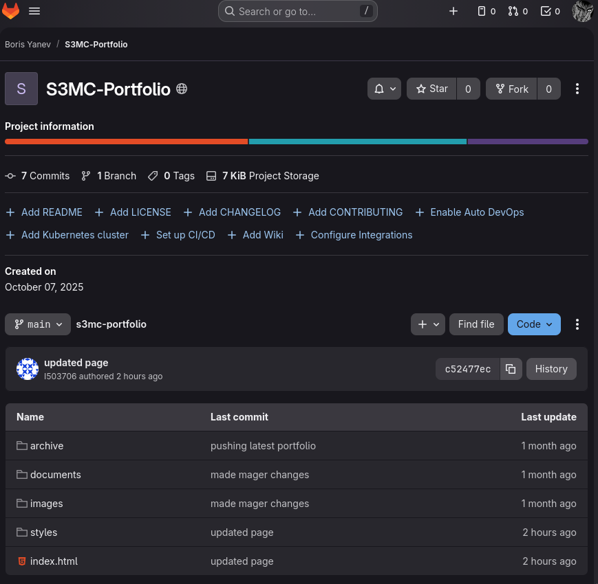
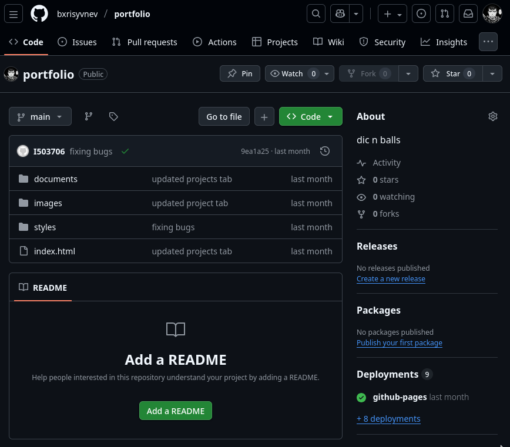
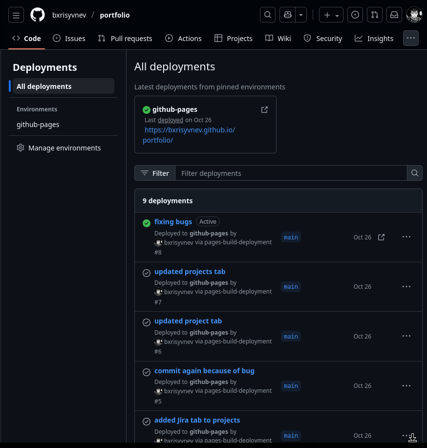
Patchwork Logo Whiteboard
I drew a concept logo on a whiteboard that was used as part of the ideas that helped design the final logo.
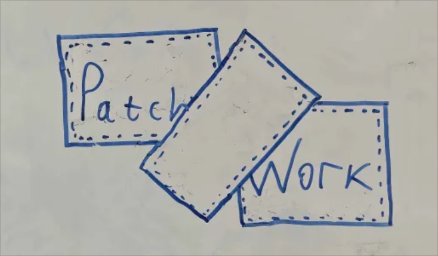
Patchwork Fonts for Logo
Below the top right corner of the image has the logo that
Hanna designed but it had the issue that the font wasn’t good
enough.
Our group’s tone is that we are professional but can still be
fun.
Since the colors are already fun I designed the left two logos
with more professional font (FreeSerif Regular). The top one
is with regular text typing and the bottom one is with capital
“K” on the word “worK” wich is there just because it looks
good. The bottom right is there just becasue it looked a
fitting based on visual judging.
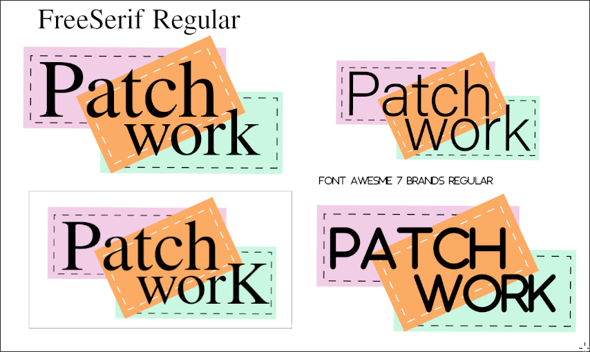
Control Panel Prototype Iterations
For the control panel gui prototype I made several iterations
in figma. I did a mistake that I did not do a sketch first of
the layout.
First iteration was just for the layout where I took some
inspiration from already done projects.
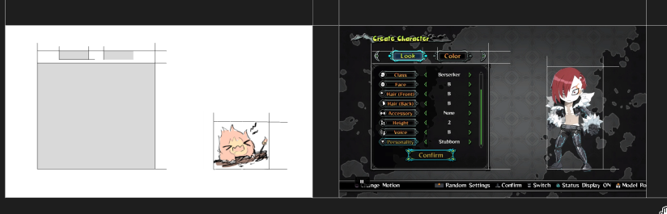
Second iteration was to design the layout for the buttons and since I barely have any experience designing things I desided to copy the already taken inspiration.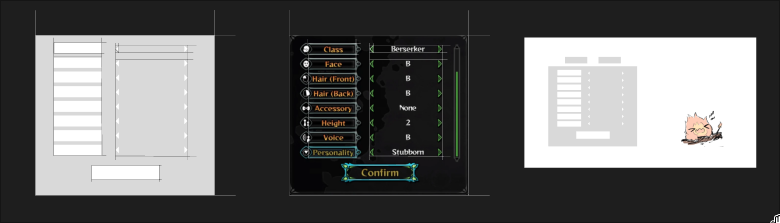
Third iteration was to add extra indication like e hp bar box and title box.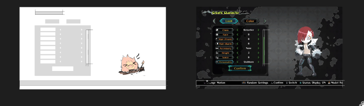
Forth iteration was to add text and extra things like info text box that will display text over Cal. and language box that was taken from an image that had a very standard language box that fitted the theme of white and gray.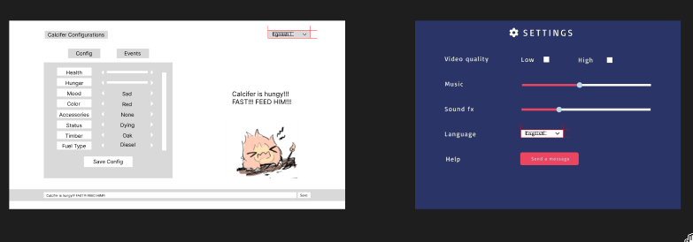
Fifth iteration was to add some color, button styling, icons and fonts. The title was from Howl’s Moving Castle where Cal. is from. The icons were inspired from minecraft.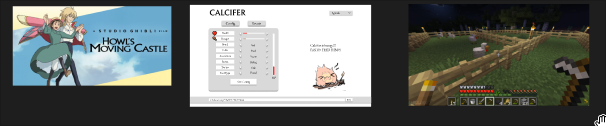
Link for Figma
Portfolio Refactor
My porfolio is made to match me so it resembles programing
software with a file tree in the projects section. Thats how
it used to look like.
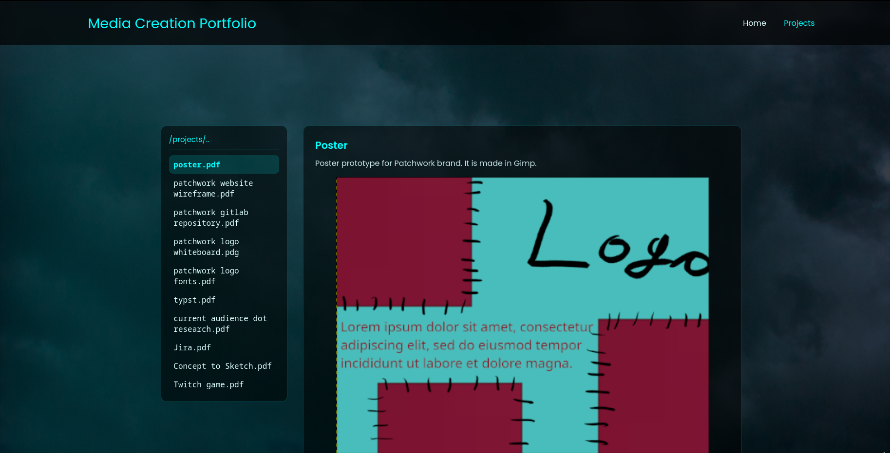
And after talk with Jan I realised that this part of the portfolio should make the learning outcomes more clearly. To fix that issue I decided to seperate the projects in different sections based on the learning outcomes they cover in the following way.
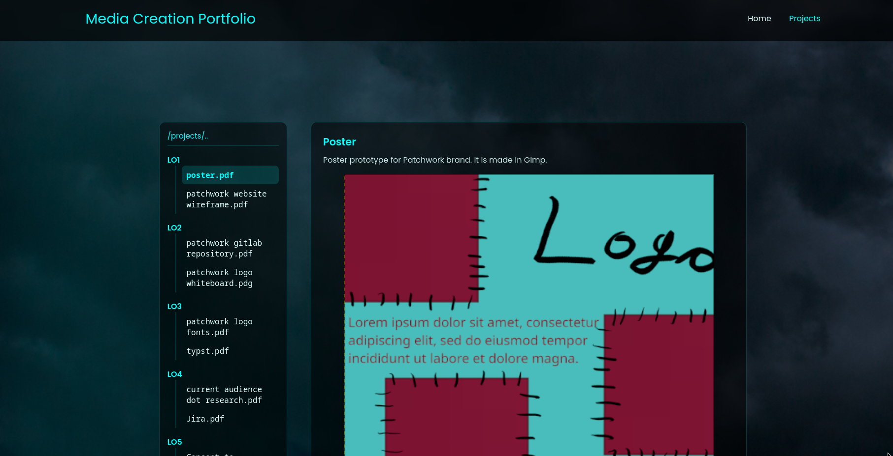
Current Audience DOT Research
While we were waiting for Deska we decided that the only thing
we cand is research. The research topics We came up were:
Research current audience
Research targeted audience
Research overall capabilities of Twitch integrated games
Research other already made games by Twitch srtreamers
The distribution of these topics was done on “who wants it”
basis. Hanna took the technology capabilities, Constantin took
targeted audience, Malou took the already made games and I
took the leftover current audience research. Dylan was not in
the discussion at that time so he went and splited the task
with Melou.
The tasks that I gave out were to do a applied research
document using a research framework by choice on the give
topics.
A week passed and it became apparend that my team mostly
doesn’t know what a research framework is and some members
went ahead and did something completely different from what
the task was… Hanna did no technology research and went ahead
and showed examples of games which was Melou’s topic. Melou
didn’t use any framework but at leas got the topic right. I
have no idea what Dylan did…
These are stuff I have to imporove for myself in order to be a
proficiant Scrum Master.
Bellow is the research documents that I made using the DOT
framework.
Jira
For the group project I am the scrum master. We decided to use
Scrum Agile because our client is not professional in any
shape or form and introduces uncertainy (it took her 2 weeks
to respond to out first email). Because of that we choose
Agile becasue it’s very good work framework for these
unpredictable clients.
The idea is to make a lot of stuff each sprint and display
them to the client and deside from that what she likes and
what she doesn’t like and work from there.
I decided that Jira is to be choosen for planning tool as Jira
is designed for Agile Scrum and also a lot of big companies
use it so it’s a great learning experience as it will come
handy in the future. My team protested for a while because
they are used to using Trello. But since we are not kids we
now use Jira.
It took multiple sesions with Paul in order to figure out how
to use that framework and I still think that improvements can
be made.
Below are screenshots of the Jira board I made and a link for
it.
Link to Jira Board
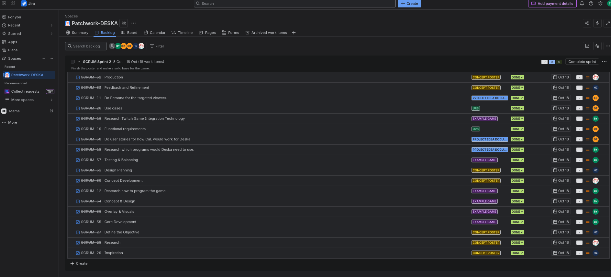
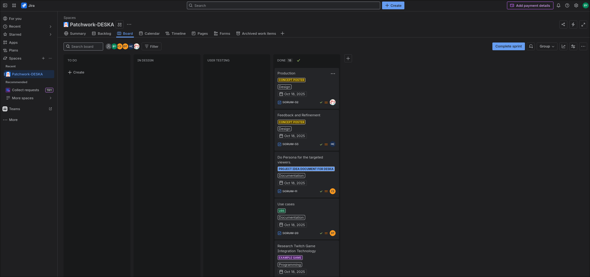
Stand up Meetings
After a talk with Dirl, me and the rest of the group had to
change the way we do our work.
Now every work day we have to attend a stand up meeting at
preferebly 9:30. To ensure that we set up discord
notifications that will remind us of the stand up meetings.
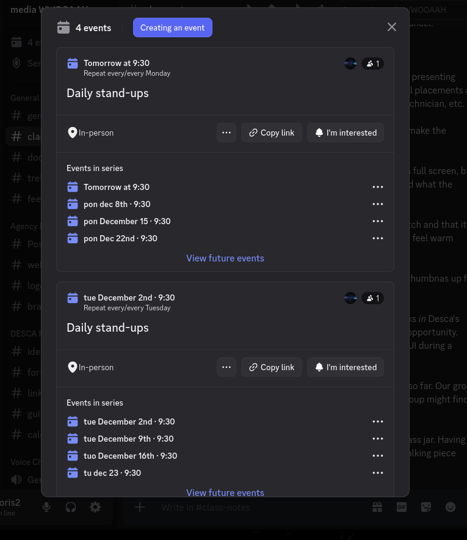
Updated Jira
Another thing we learned from Dirk was that the jira board was
not good enough so I had to change some of it.
There is now epics, more detailed tasks and definition of
done. We also do retrospective at the end of each sprint
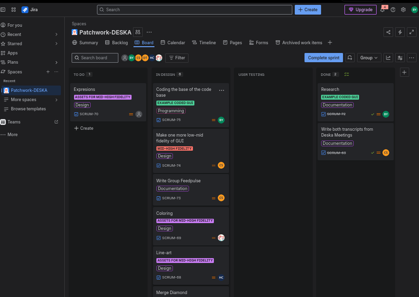
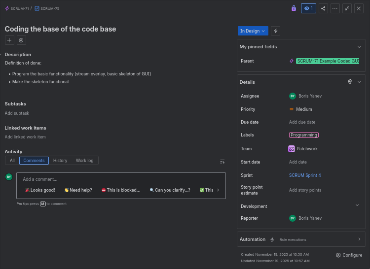
Meetings with Desca
We as a group had already 2 meetings with Desca where we discussed our progress and asked for design preferences.
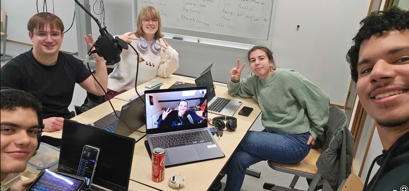
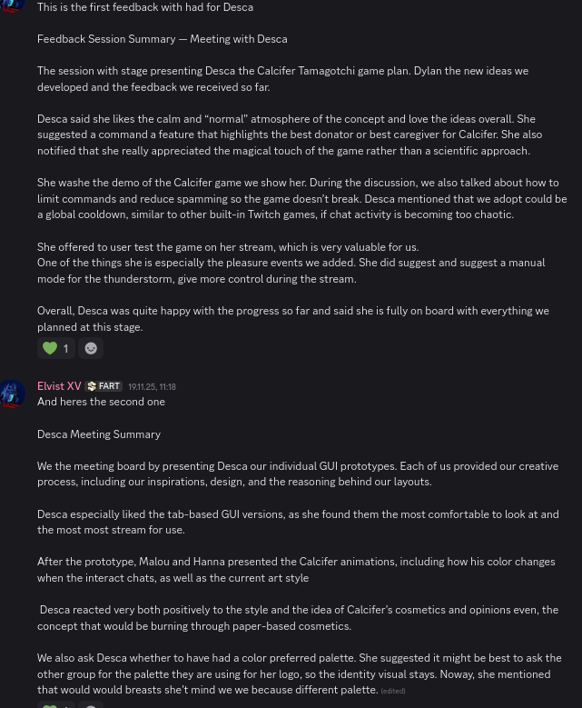
Twitch Game
During the break I had the task to develop a simple twitch
integrated game in order to properly research the technologies
that will be used. Bellow is a clip of a test stream I did
testing the game features..
You can’t see it but in the chat im typing !feed, !play and
!heal and the tamagotchi responds by doing an action and it’s
stats increase. Bellow are link to portfolio and repository.
Link to clip
Link to repository
Tutoring
In order to expand my tutoring skills and help my team improve
I helped Dylan and Constantin work with git by teaching them
how to cloning works, working in branches and some more basic
git commands.
Bellow are images of the repository where they work in
seperate branches.
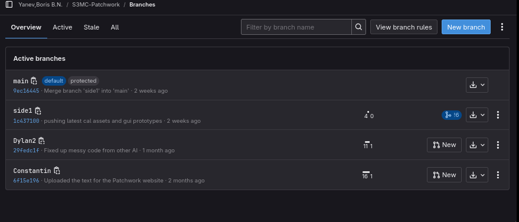
Researching Figma
Base on feedback from my semester coaches on focusing to learn
one design tool that will help me in the future I decided to
lean figma. I set on learning it from this video.
Link to clip
Also from another video linked bellow I found out I can export
code directly from figma which will be really helpful in the
future of my development and I should focus on learning that
till rest of this semester.
Link to clip
Demonstration Prototype
On 27.11 I was on my first project display where me and my
group had to present a prototype of our project.
For the prototype I coded the game with commands trigering
different animations on a stream. We used little bit of wizard
of oz method because the chat commands that had to trigger the
animation weren’t set up and I had to manualy send the server
commands to do it.
The feedback we got from the teachers is in the following
image:
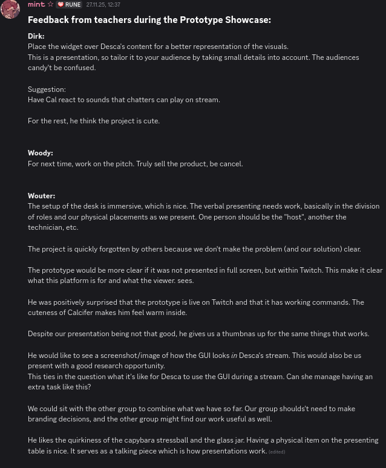
I also went around and looked at what other groups had done and took some feedback notes and remarcks on a piece of paper shown bellow:
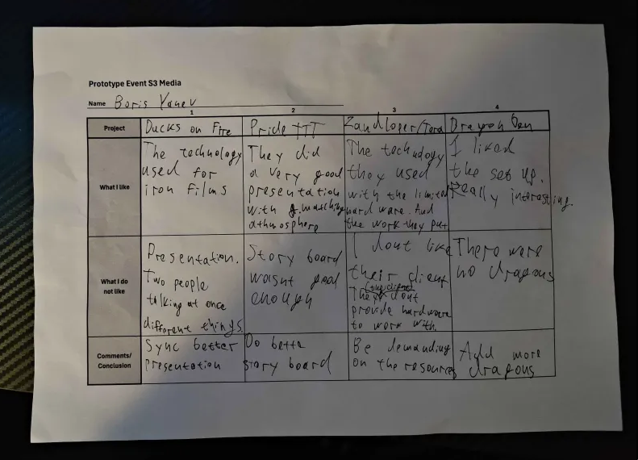